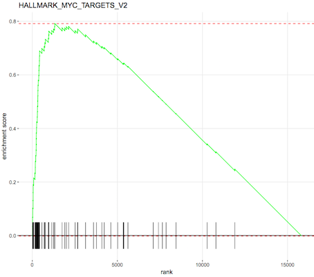

Sometimes there is quite a long list of genes to interpret after a differential expression analysis, and it is usually infeasible to go through the list one gene at a time trying to understand it’s biological function. A common downstream procedure is gene set testing, which aims to understand which pathways/gene networks the differentially expressed genes are implicated in. There are many different gene set testing methods that can be applied and it can be useful to try several.
The purpose of this tutorial is to demonstrate how to perform gene set testing using tools in Galaxy. The data comes from a Nature Cell Biology paper, EGF-mediated induction of Mcl-1 at the switch to lactation is essential for alveolar cell survival), Fu et al. 2015. That study examined the expression profiles of basal and luminal cells in the mammary gland of virgin, pregnant and lactating mice (see Figure below). How to generate differentially expressed genes from reads (FASTQs) for this dataset is covered in the accompanying tutorials RNA-seq reads to counts and RNA-seq counts to genes. This tutorial is inspired by material from the COMBINE R RNAseq workshop here and the Cancer Research UK workshop here.
Your results may be slightly different from the ones presented in this tutorial
due to differing versions of tools, reference data, external databases, or
because of stochastic processes in the algorithms.
We will use several files for this analysis:
Differentially expressed results files (genes in rows, logFC and P values in columns)
Sample information file (sample id, group)
Gene lengths file (genes, lengths)
Filtered counts file (genes in rows, counts for samples in columns, with lowly expressed genes removed)
Gene sets file for MSigDB Hallmark collection for mouse (rdata)
Import data
hands_on Hands-on: Data upload
Create a new history for this RNA-seq exercise e.g. RNA-seq genes to pathways
tip Tip: Creating a new history
Click the new-history icon at the top of the history panel
If the new-history is missing:
Click on the galaxy-gear icon (History options) on the top of the history panel
Select the option Create New from the menu
tip Tip: Renaming a history
Click on Unnamed history (or the current name of the history) (Click to rename history) at the top of your history panel
Type the new name
Press Enter
Import the files
To import the files, there are two options:
Option 1: From a shared data library if available (ask your instructor)
tip Tip: Importing data from a data library
As an alternative to uploading the data from a URL or your computer, the files may also have been made available from a shared data library:
Go into Shared data (top panel) then Data libraries
Find the correct folder (ask your instructor)
Select the desired files
Click on the To History button near the top and select as Datasets from the dropdown menu
In the pop-up window, select the history you want to import the files to (or create a new one)
Add a tag called #basal to the limma-voom_basalpregnant-basallactate and a tag called #luminal to the limma-voom_luminalpregnant-luminallactate files.
tip Tip: Adding a tag
Click on the dataset
Click on galaxy-tagsEdit dataset tags
Add a tag starting with #
Tags starting with # will be automatically propagated to the outputs of tools using this dataset.
Check that the tag is appearing below the dataset name
Gene Set Testing
Gene Ontology testing with goseq
We would like to know if there are biological categories that are enriched among the differentially expressed genes. To do this we will perform a Gene Ontology analysis, similar to the RNA-seq ref-based tutorial.
Gene Ontology (GO) analysis is widely used to reduce complexity and highlight biological processes in genome-wide expression studies. However, standard methods give biased results on RNA-seq data due to over-detection of differential expression for long and highly-expressed transcripts.
The goseq tool provides methods for performing GO analysis of RNA-seq data, taking length bias into account. The methods and software used by goseq are equally applicable to other category based tests of RNA-seq data, such as KEGG pathway analysis.
goseq needs 2 files as inputs:
a differentially expressed genes file. Information for all genes tested for differential expression (all genes after filtering lowly expressed). This file should have 2 columns:
the Gene IDs (unique within the file)
True (differentially expressed) or False (not differentially expressed)
a gene lengths file. Information to correct for potential length bias in differentially expressed genes. This file should have 2 columns:
the Gene IDs (unique within the file)
the gene lengths
We need a table of differentially expressed (DE) results for goseq. Here we will use two tables, one for each of the basal and luminal pregnant vs lactate results. This is so we can compare results for the two cell types. These tables were output from the limma-voom tool but DE tables from edgeR or DESeq2 could also be used. For this dataset we will call genes differentially expressed if they have an adjusted P value below 0.01. We can use the gene lengths from the counts table in GEO (provided as a file called seqdata in Zenodo). But if we didn’t have that we could use a tool like featureCountstool to output a gene lengths file. The seqdata file contains >20k genes, but we only want the ~15k we have in our differentially expressed genes file. So we will join the lengths file with the differentially expressed genes file, keeping only the length information for genes present in the differentially expressed genes file. We can then cut out the columns we need for the two inputs (gene id, length) (gene id, DE status) and as a bonus they will both be sorted in the same order, which is what we need for goseq.
To generate the two input files we will use:
Compute to add a column to the DE tables, that gives genes meeting our adj.P threshold the value “True” and all other genes the value “False”.
Join two Datasets to add the gene length information to the differentially expressed genes, matching on gene ids
Cut to extract the two columns for the differentially expressed genes information
Cut to extract the two columns for the gene length information
hands_on Hands-on: Prepare the two inputs for GOSeq
Compute an expression on every rowtool with the following parameters:
param-select“Select a genome to use”: Mouse(mm10)
param-select“Select Gene ID format”: Entrez Gene ID
param-check“Select one or more categories”: GO: Biological Process
“Output Options”
param-check“Output Top GO terms plot?”Yes
goseq generates a big table with the following columns for each GO term:
category: GO category
over_rep_pval: p-value for over representation of the term in the differentially expressed genes
under_rep_pval: p-value for under representation of the term in the differentially expressed genes
numDEInCat: number of differentially expressed genes in this category
numInCat: number of genes in this category
term: detail of the term
ontology: MF (Molecular Function - molecular activities of gene products), CC (Cellular Component - where gene products are active), BP (Biological Process - pathways and larger processes made up of the activities of multiple gene products)
p.adjust.over_represented: p-value for over representation of the term in the differentially expressed genes, adjusted for multiple testing with the Benjamini-Hochberg procedure
p.adjust.under_represented: p-value for over representation of the term in the differentially expressed genes, adjusted for multiple testing with the Benjamini-Hochberg procedure
To identify categories significantly enriched/unenriched below some p-value cutoff, it is necessary to use the adjusted p-value.
A plot of the top 10 over-represented GO terms (by p-value) can be output from the goseq tool to help visualise results. Click on the Top over-represented GO terms plot PDF in the history. It should look similar to below.
Figure 2: Basal pregnant vs lactating top 10 GO terms
question Questions
Can you generate the plot of top 10 GO terms for the luminal differentially expressed genes? Tip: You could use the Rerun button for each step (as the parameters are already selected) and choose the luminal file as input.
solution Solution
Running goseq on the luminal file should give a plot similar to below.
Figure 3: Luminal pregnant vs lactating top 10 GO terms
For more on GO analysis, including how to simplify GO results and visualize with GO graphs, see the GO Enrichment tutorial.
Gene Set Enrichment Analysis with fgsea
Gene Set Enrichment Analysis (GSEA) (Subramanian et al., 2005) is a widely used method that determines whether a set of genes is enriched in a list of differentially expressed genes. Unlike the previous method with goseq, no threshold is applied for what is considered “differentially expressed”, all genes are used. If a gene set falls at either the top (over-expressed) or bottom (under-expressed) of the list it is said to be enriched. fgsea is a faster implementation of the GSEA method. fgsea requires a ranked list of genes and some gene sets to test.
The Molecular Signatures Database (MSigDB) contains curated collections of gene sets that are commonly used in a GSEA analysis. They can be downloaded from the Broad website. But these collections are only of human gene sets. If working with another species you would need to first map the genes to their human orthologues. However, MSigDB versions for mouse are provided by the Smyth lab here. There are several MSigDB collections, we’ll use the Hallmark collection, which contains 50 gene sets. According to MSigDB, “each gene set in the hallmark collection consists of a “refined” gene set, derived from multiple “founder” sets, that conveys a specific biological state or process and displays coherent expression. The hallmarks effectively summarize most of the relevant information of the original founder sets and, by reducing both variation and redundancy, provide more refined and concise inputs for gene set enrichment analysis”. We’ll use the mouse Hallmark file provided in Zenodo, originally downloaded from http://bioinf.wehi.edu.au/software/MSigDB/mouse_H_v5p2.rdata.
There are several ways we could choose to rank our genes, we could rank by log-fold change (most upregulated to most downregulated) but that doesn’t take into account any error in the log fold change value. Another way is to use the “signed fold change” which is to rank by the sign of the fold change multiplied by the P value (as described here. We could also use the t statistic that’s output from limma, as that takes into account the log-fold change and it’s standard error, see here for more explanation. We’ll use the t statistic to rank here.
hands_on Hands-on: Perform gene set enrichment with fgsea
Cut columns from a tabletool with
param-text“Cut columns”: c1,c6 (the Entrez gene ids and t-statistic)
param-select“Delimited by”: Tab
param-file“From”: the limma-voom_basalpregnant-basallactate file
Sort data in ascending or descending ordertool with
param-file“Sort Query”: the output of Cuttool
param-text“Number of header lines”: 1
“Column selections”:
param-select“on column”: Column: 2
param-select“in”: Descending order
param-select“Flavor”: Fast numeric sort (-n)
fgseatool with
param-file“Ranked Genes”: the output of Sorttool
param-check“File has header?”: Yes
param-file“Gene Sets”: mouse_hallmark_sets (this should be rdata format, if not, see how to change it in the Tip below)
param-text“Minimum Size of Gene Set”: 15
param-check“Output plots”: Yes
tip Tip: Changing the datatype
Click on the galaxy-pencilpencil icon for the dataset to edit its attributes
In the central panel, click on the galaxy-chart-select-dataDatatypes tab on the top
Select ``
Click the Change datatype button
fgsea outputs a table of results containing a list of pathways with P values and enrichment scores. It can also output a summary table plot of the top pathways such as the one shown below for the basallpregnant-basallactate contrast below.
Figure 4: fgsea Summary table
An enrichment plot of the each of the top pathways can also be produced, one is shown below. The barcode pattern shows where the genes in the set are found in the list of ranked genes. Most of the bars to the left indicate enrichment of the set at the top of the ranked list of genes (upregulated) and most bars towards the right indicate enrichment at the bottom of the list (downregulated). The enrichment score reflects the degree to which the genes are enriched at the top or bottom of the list.
Figure 5: fgsea Enrichment plot
question Questions
Can you run fgsea on the luminal contrast and generate the fgsea summary table plot?
solution Solution
Running fgsea on the luminal file should give a plot similar to below.
Figure 6: fgsea Summary table for luminal
Ensemble gene set enrichment analyses with EGSEA
The ensemble of genes set enrichment analyses (EGSEA) (Alhamdoosh et al, 2017) is a method developed for RNA-seq data that combines results from multiple algorithms and calculates collective gene set scores, to try to improve the biological relevance of the highest ranked gene sets. EGSEA has built-in gene sets from MSigDB and KEGG for human and mouse. We’ll show here how it can be used with the MSigDB Hallmark collection and KEGG pathways. For input we need a count matrix and EGSEA will perform a limma-voom analysis before gene set testing. We can use the provided filtered counts file output from limma, where the low count genes have been filtered out (output from limma by selecting “Output Filtered Counts Table?”: Yes). We just need to remove the gene symbol and description columns. We also need a symbols mapping file containing just the Entrez ids and symbols, which we can generate from the filtered counts file. The third input we need is a factors information file, containing what groups the samples belong to, we can use the same one from the tutorial RNA-seq counts to genes. EGSEA provides twelve base methods and we will select eleven, all except roast, as the fry method is a fast approximation of roast.
hands_on Hands-on: Perform ensemble gene set testing with EGSEA
Cut columns from a table (cut)tool with the following parameters:
param-file“File to cut”: limma-voom filtered counts
param-select“Operation”: Discard
param-select“List of fields”: Select Column:2, Column:3
Rename to EGSEA counts
Cut columns from a table (cut)tool with the following parameters:
param-file“File to cut”: limma-voom filtered counts
param-select“Operation”: Keep
param-select“List of fields”: Select Column:1, Column:2
Rename to EGSEA anno
EGSEAtool with the following parameters:
param-select“Count Files or Matrix?”: Single Count Matrix
param-file“Count Matrix”: Select EGSEA counts
param-check“Input factor information from file?”: Yes
param-file“Factor File”: Select factordata
param-file“Symbols Mapping file”: EGSEA anno
param-text“Contrast of Interest”: basalpregnant-basallactate
param-check“MSigDB Gene Set Collections”: H: hallmark gene sets
param-check“KEGG Pathways”: Metabolism and Signalling
param-check“Download KEGG pathways?”: Yes
param-check“I certify that I am not using this tool for commercial purposes”: Yes
This generates a table of results, and a report. Contained within the report are plots, such as heatmaps of the top ranked pathways, as shown below. Note that we see some similar pathways in the results here as with the fgsea analysis.
Figure 7: EGSEA heatmaps
KEGG pathway diagrams are generated if KEGG pathways are selected, as shown below. These show the expression values of the genes overlaid, genes upregulated in the contrast are shown in red, downregulated genes in blue. Ribosome was one of the top GO terms identified for the basal pregnant vs lactate contrast and here we see ribosome pathways are in the top ranked KEGG pathways.
Figure 8: EGSEA KEGG pathways
question Questions
Can you run EGSEA on the luminal contrast identify the top KEGG gene sets? Tip: you could use the rerun button and replace the “Contrast of Interest” with the name of the luminal contrast.
solution Solution
Running EGSEA on the luminal file should give top KEGG gene sets similar to below.
Figure 9: EGSEA KEGG pathways for luminal
Conclusion
In this tutorial we have seen some gene set testing methods that can be used to interpret lists of differentially expressed genes. Multiple methods can be used to help identify pathways of interest and to provide complementary ways of visualising results. This follows on from the accompanying tutorials, RNA-seq reads to counts and RNA-seq counts to genes, that showed how to turn reads (FASTQs) into differentially expressed genes for this dataset. For further reading on analysis of RNA-seq count data and the methods used here, see the articles; RNA-seq analysis is easy as 1-2-3 with limma, Glimma and edgeR (Law et al. 2016) and From reads to genes to pathways: differential expression analysis of RNA-Seq experiments using Rsubread and the edgeR quasi-likelihood pipeline (Chen, Lun, Smyth 2016).
keypoints Key points
goseq can be used to identify enriched gene ontology categories and incorporate gene length bias
fgsea can be used to identify enriched gene sets, such as the MSigDB collections, and generate barcode plots
EGSEA can be used to identify enriched gene sets, such as MSigDB and KEGG, generating visualisations that include heatmaps and KEGG pathway diagrams
Multiple methods can be used to help identify differentially expressed pathways and to visualise results
Useful literature
Further information, including links to documentation and original publications, regarding the tools, analysis techniques and the interpretation of results described in this tutorial can be found here.
Feedback
Did you use this material as an instructor? Feel free to give us feedback on how it went.
Batut et al., 2018 Community-Driven Data Analysis Training for Biology Cell Systems 10.1016/j.cels.2018.05.012
details BibTeX
@misc{transcriptomics-rna-seq-genes-to-pathways,
author = "Maria Doyle and Belinda Phipson",
title = "RNA-seq genes to pathways (Galaxy Training Materials)",
year = "2021",
month = "01",
day = "06"
url = "\url{/training-material/topics/transcriptomics/tutorials/rna-seq-genes-to-pathways/tutorial.html}",
note = "[Online; accessed TODAY]"
}
@article{Batut_2018,
doi = {10.1016/j.cels.2018.05.012},
url = {https://doi.org/10.1016%2Fj.cels.2018.05.012},
year = 2018,
month = {jun},
publisher = {Elsevier {BV}},
volume = {6},
number = {6},
pages = {752--758.e1},
author = {B{\'{e}}r{\'{e}}nice Batut and Saskia Hiltemann and Andrea Bagnacani and Dannon Baker and Vivek Bhardwaj and Clemens Blank and Anthony Bretaudeau and Loraine Brillet-Gu{\'{e}}guen and Martin {\v{C}}ech and John Chilton and Dave Clements and Olivia Doppelt-Azeroual and Anika Erxleben and Mallory Ann Freeberg and Simon Gladman and Youri Hoogstrate and Hans-Rudolf Hotz and Torsten Houwaart and Pratik Jagtap and Delphine Larivi{\`{e}}re and Gildas Le Corguill{\'{e}} and Thomas Manke and Fabien Mareuil and Fidel Ram{\'{\i}}rez and Devon Ryan and Florian Christoph Sigloch and Nicola Soranzo and Joachim Wolff and Pavankumar Videm and Markus Wolfien and Aisanjiang Wubuli and Dilmurat Yusuf and James Taylor and Rolf Backofen and Anton Nekrutenko and Björn Grüning},
title = {Community-Driven Data Analysis Training for Biology},
journal = {Cell Systems}
}
congratulations Congratulations on successfully completing this tutorial!
 Maria Doyle
Maria Doyle Belinda Phipson
Belinda Phipson